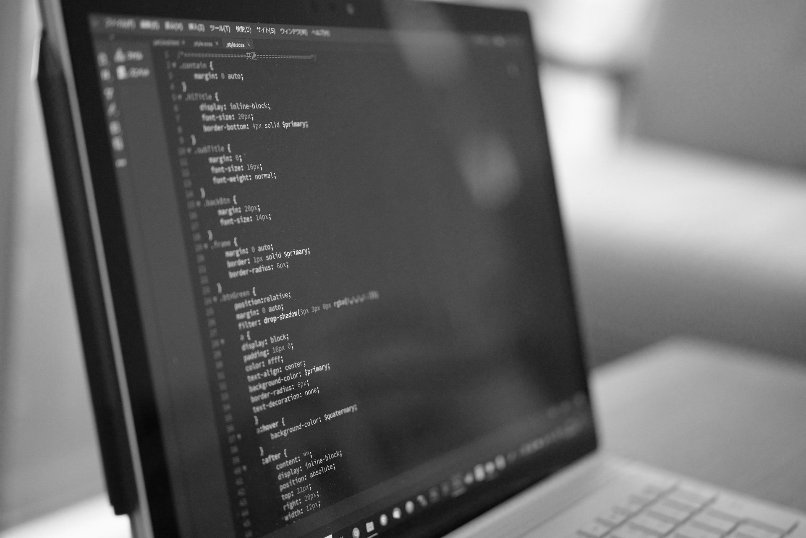

Programmation
Dans cette partie nous parlerons davantage de la programmation du site et de la structure de celui-ci.
Parcourir


Dans cette partie nous parlerons davantage de la programmation du site et de la structure de celui-ci.
Parcourira
a
La programmation de notre site a été faite en plusieurs étapes
Pour la réalisation de ce projet nous avons utilisé le logiciel Visual studio code qui permet d’être plus performant lors de la programmation
Dans un premier temps après avoir réalisé un design brut sur Word nous avons commencé à programmer le
site en HTML.
Puis, nous avons structuré la page avec la tête du code HTML et la zone corp.
<html lang="fr"> <!--structure HTML --><!--Site adapté pour PC et mobile-->
<head><!--Tête du programme --> <!--début de la Tête-->
<meta charset="UTF-8"> <!--Notre encodage-->
<meta name="viewport" content="width=device-width, initial-scale=1.0">
<!-- mise en page -->
<title>Affichage - WassimMESFIOUI</title><!--titre programme -->
<link rel="stylesheet" href="../css/style.css"> <!--notre fichier css -->
<script src="script.js" defer></script><!--notre fichier js -->
</head><!--Fin de la Tête-->
<body> <!--début du Corp-->
<!--Corp de notre programme ou on place nos sections-->
</body> <!--fin du Corp-->
Ensuite, nous avons créé des sections pour pouvoir organiser notre code (tout cela dans la zone corp du programme). Par exemple notre section header.
<!--Section header -->
<header><!--bannière du site --><!--header nom de la section -->
...
</header>
Enfin nous avons complété nos sections avec l'ajout de sous-sections avec des images, du texte, des liens, selon nos besoins.
ci-dessou on retrouve un titre, un sous-titre et un lien.
<!--Section header -->
<header><!--bannière du site --><!--header nom de la section -->
<h1>Les méthodes d'affichage</h1><!--titre 1 --><!--h1 nom d’une sous-section -->
<h4>Projet tutoré du DUT GEII</h4><!--sous-titre -->
<a href="#Historique">Parcourir</a> <!--notre bouton parcourir (lien) vers une balise Historique-->
</header>
Ce code HTML nous donne alors cela :
On peut bien voir ici alors l’apparition de notre titre « Les méthodes d'affichage » l’apparition de notre sous-titre « Projet tutoré du DUT GEII » et l’apparition de notre lien « Parcourir »
Pour styliser notre code nous avons alors utilisé CSS.
Le CSS rend le code HTML plus "propre" facilitant le travail des robots d'indexation web.
Grace à notre travail au préalable sur l’organisation des sections dans notre HTML nous avons pu styliser
notre page web plus efficacement.
(le code HTML du modèle personnalisé est en quelque sorte le
squelette du site web, tandis que le code CSS en est la peau)
Pour styliser notre code html ci-dessus nous avons créé un fichier CSS.
Pour appliquer notre CSS sur notre HTML, nous reprenons le nom de la section pour pouvoir
structurer tout le bloque html grâce à CSS
Par exemple: « header » et le nom de notre section Html.
/* On stylise notre header (notre bannière) */
header{
display:flex;/* On aligne nos titre */
flex-direction: column;/* On met l'alignement des objets dans le sens qu'on veut ici en colonne */
align-items: center; /* on centre les éléments */
background: url('image/illuv2.PNG'); /* on met en background notre image rangée dans notre dossier image*/
background-size: cover; /* background couvre notre page de gauche à droite*/
color: aliceblue; /* couleur texte */
padding: 210px; /* Taille image de fond */
}
Puis on stylise les sous-sections du header par exemple la sous-section h1 (notre titre, « Les méthodes d'affichage » pour pouvoir structuré seulement la sous-section choisit).
/* travail sur titre h1 */
header h1{
font-family:'Playfair Display', sans-serif;/* changement de police */
font-size: 50px; /* On augmente la taille de h1 */
text-align: center ;/* On aligne le texte (format mobile)*/
background-color: rgba(26, 25, 25, 0.438); /* couleur transparente du background */
} Résultat : (Nous sommes partis sur un design noir et blanc, moderne que l'on peut retrouver sur des nombreux sites actuel)
Sur notre page Web nous avons pu utiliser java pour créer un effet de chargement par exemple
const loader = document.querySelector('.loader');//effet de chargement
window.addEventListener('load', () =>{)//Ajout d’un événement
loader.classList.add('fondu-out')//effet fin de chargement "sur le css"
});Ici notre code java détecte le chargement de la page et affiche « .loader » tant que la page charge. Puis affiche notre « .fondu-out » quand la page a chargé
La structure de notre « .loader » s’apparente à la structure de notre header CSS+HTML (on affiche un texte de chargement ou autre sur fond noir)
Notre .fondu-out et un programme CSS qui permet de faire alors disparaitre notre .loarder quand la page est chargée.
.fondu-out{
animation-delay: 2.5s; ;/* temps d’animation */
opacity: 0; ;/* opacité finale à 0 donc n’existe plus sur la page*/
transition: opacity 2.3s ease-in-out; ;/* transition de visible à non visible */
pointer-events: none; ;/* pas d’évènement ou interaction possible avec le chargement*/
}
Pour l’hébergement nous avons comparée différentes plateformes


L’ensemble de ces plateformes se valent et permettent un hébergement gratuit sans limite de temps, mais avec des conditions d’espaces de 500 mo en général sauf pour DRIVE qui propose 15go
ici 500mo nous suffisent pour notre site.
Nous avons alors opté pour Netlify qui permet une plus grande liberté sur le nom de domaine, des performances accrues (vitesse de connexion au serveurs, chargement rapide des pages web) et une connexion https sécurisée